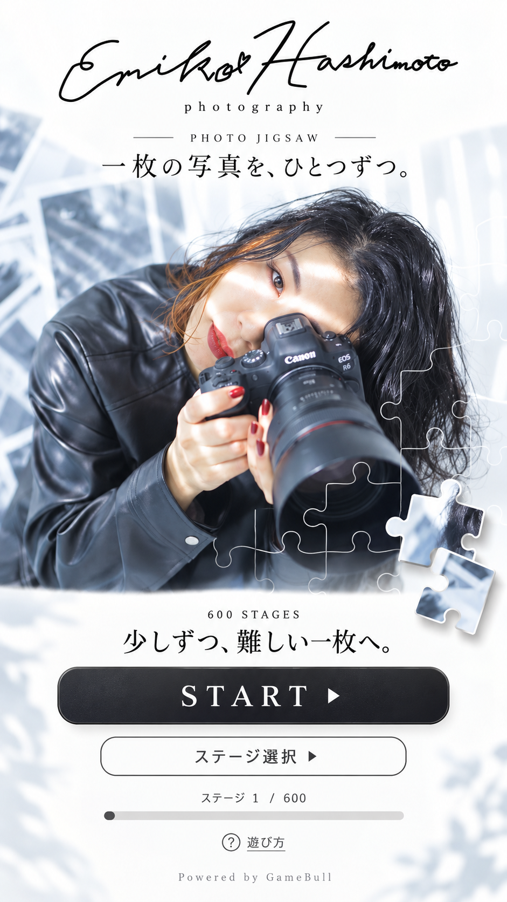

クリアすると、次のステージが開きます。
ピースを指で動かして、写真の枠にはめましょう。
ピースをタップして選び、置きたい場所をタップすることもできます。正しい位置に近づくと、ぴったりはまります。
新しいゲームには1ライフが必要です。途中保存からの再開では追加のライフは使いません。「保存して終了」で盤面を保存できます。
20ステージごとに難易度が上がり、全600ステージに挑戦できます。途中経過は自動保存されます。
ピースを指で動かして枠へ。タップで選んで、枠をタップしても置けます。